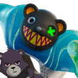
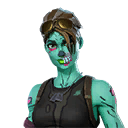
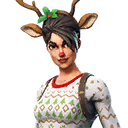
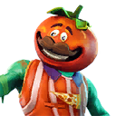
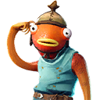
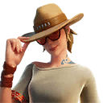
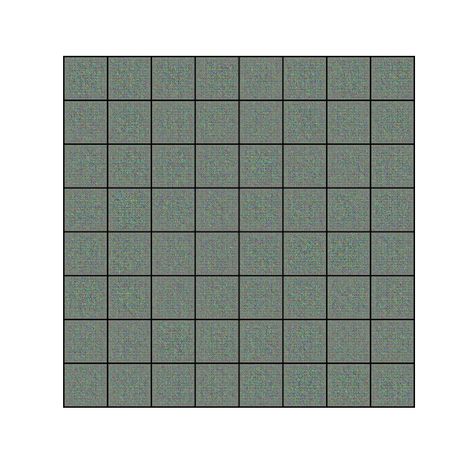

I wanted to find a project on which I could learn GAN. In the family of GAN there are a bunch of
different types of
implementations such as DCGAN, CycleGAN, CGAN, etc... Here, I decided to deal with DCGAN
to generate brand new
skins based on historical skins created in Fortnite.
DCGAN to generate fortnite skins
Challenge
Dataset
In order to build the dataset, I used webscrapping from fortnite skin API to get the png images from
the web. Then,
I needed to clean a bit the data as some images are in poor quality, or just not showing which add biais to the model
training. In total, I only have 1300 images for this and below, you can see a sample of the dataset.
I needed to clean a bit the data as some images are in poor quality, or just not showing which add biais to the model
training. In total, I only have 1300 images for this and below, you can see a sample of the dataset.






Model - Training - Validation
To solve this problem, I decided to use a Deep Convolutionnal Generate Adversarial Network (DCGAN) which
uses
a generator and a discriminator competing against each others. Both are learning from the other one. For the training,
I used a Binary Cross Enthropy Loss function for both generator and discriminator with Adam optimizer. I trained this
model over 500 epochs during about 12 hours with 1 GPU.
import pandas as pd
import matplotlib.pyplot as plt
from pyodide.http import open_url
df = pd.read_csv(open_url('https://raw.githubusercontent.com/spradier/spradier.github.io/master/files/losses.csv'))
#print(df)
fig, ax = plt.subplots(nrows=1, ncols=1)
df.plot.line(y=["g_losses", "d_losses"], ax=ax, color=['#FFAB00', 'green'])
ax = plt.gca()
ax.patch.set_facecolor('black')
fig.patch.set_facecolor('black')
ax.tick_params(axis='x', colors='white')
ax.tick_params(axis='y', colors='white')
fig
a generator and a discriminator competing against each others. Both are learning from the other one. For the training,
I used a Binary Cross Enthropy Loss function for both generator and discriminator with Adam optimizer. I trained this
model over 500 epochs during about 12 hours with 1 GPU.
Results
Of course, the result is not perfect or ideal. There are many reasons behind that, the first is that I am
training this model on a really small dataset for image generation. Another reason is that I am not training
it enough but for a longer training, it requires more GPUs or more time. I considered that this was enough
for now and later on it will be interesting to re train it.
